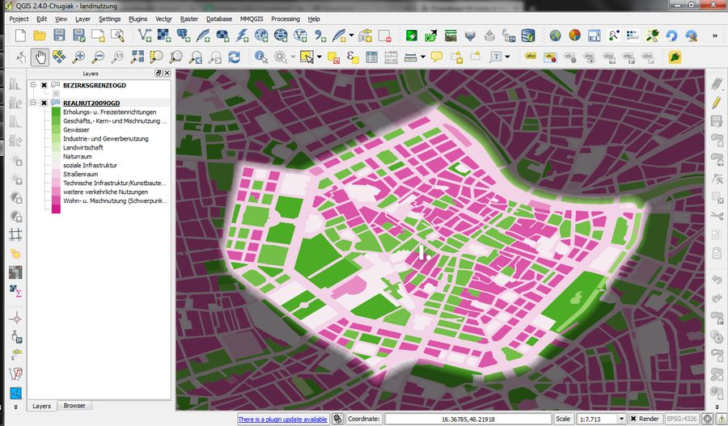
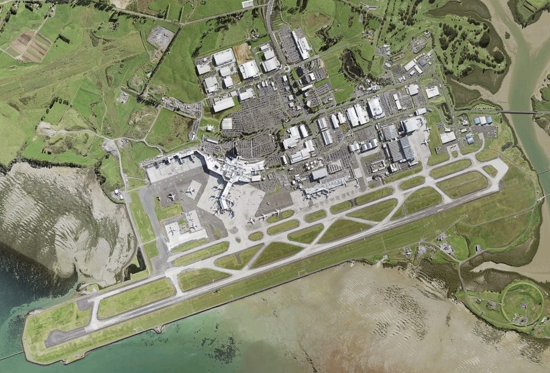
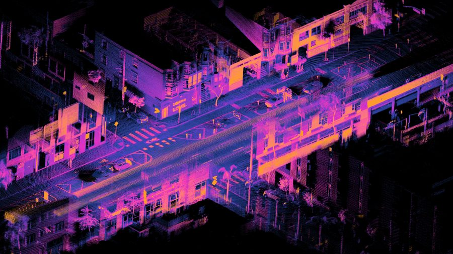
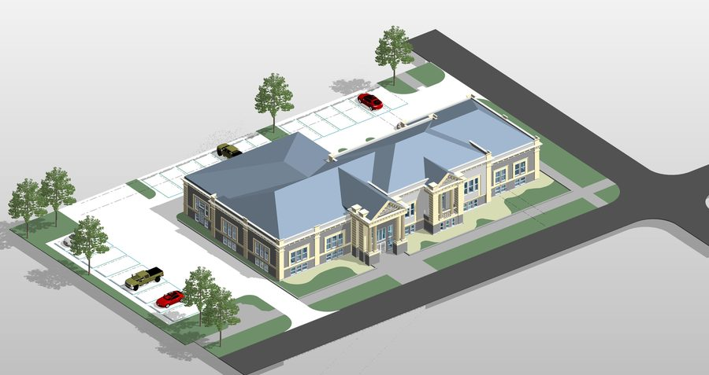
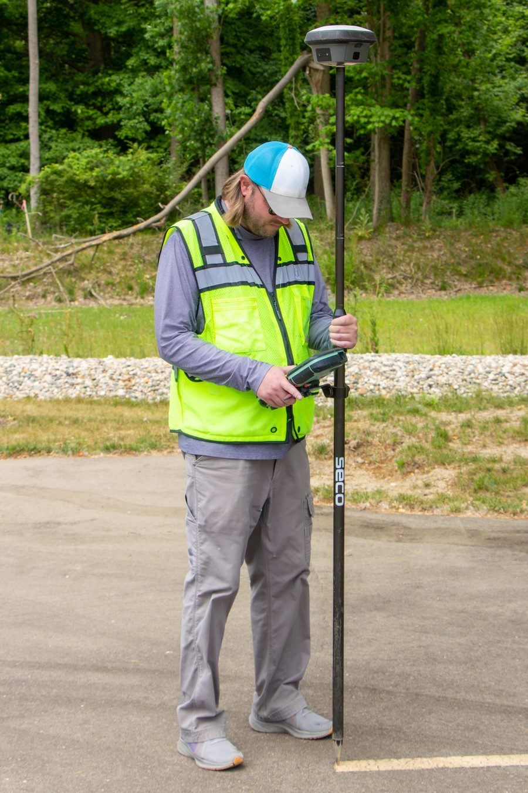
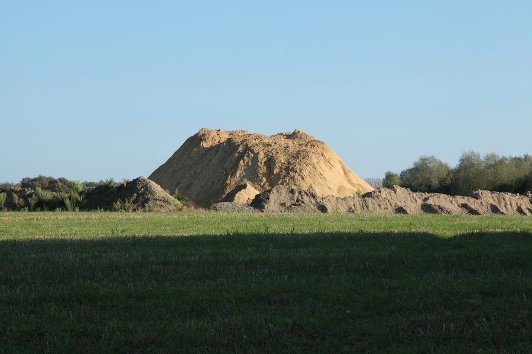

What is GIS?
Esri, the company behind the software most GIS teams use, explains what a geographic information system actually does and why businesses rely on one.
Read on EsriYou do not need a geomatics degree to commission a survey. These are short, plain-language explainers we like, picked to match each service we offer.
We are running LiDAR surveys on Gaborone Dam and Lotsane Dam right now. This is the clearest plain-language explanation we have found of how a laser scanner turns pulses of light into a 3D map, no engineering background required.
Read on Explain that Stuff

Photo: underdarkGIS, CC BY 2.0Esri, the company behind the software most GIS teams use, explains what a geographic information system actually does and why businesses rely on one.
Read on Esri
Photo: Land Information NZ, CC BY 4.0Heliguy breaks down how dozens of overlapping drone photos become one accurate, measurable map, and why that is different from a regular aerial photo.
Read on Heliguy
Photo: Daniel L. Lu, CC BY 4.0FARO builds the laser scanners our industry uses. This introduction shows how millions of scanned points become a measurable 3D model of a site.
Read on FARO
Photo: Archdraw, CC BY-SA 4.0Autodesk explains Building Information Modelling: a shared 3D model that architects, engineers and site teams can all update from the same data.
Read on Autodesk
Photo: J. Wysko, CC BY 4.0Emlid, a GPS equipment maker, explains how a base station and a rover talk to each other to bring survey accuracy down to a centimetre.
Read on Emlid
Photo: Frank Vincentz, CC BY-SA 3.0DroneDeploy looks at what actually moves the needle on stockpile accuracy, and where volume calculations tend to go wrong.
Read on DroneDeployThese are external articles we find genuinely useful. We do not control their content and are not affiliated with their publishers.
Send us the question your team keeps running into on-site. We will point you to a real answer, or give you our own.